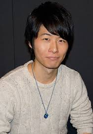

Ryousuke Kanemoto is a Japanese actor. He is affiliated with Aoni Production.
- Gender: Male
- Birthday: September 2, 1988
- Hometown: Okayama, Japan

| |
Ryousuke Kanemoto is a Japanese actor. He is affiliated with Aoni Production.
|
 |
|---|
 |
Torway Remion | Alderamins on the Sky | Torway Remion is a member of Imperial Knight. He is a kinded heart man. |